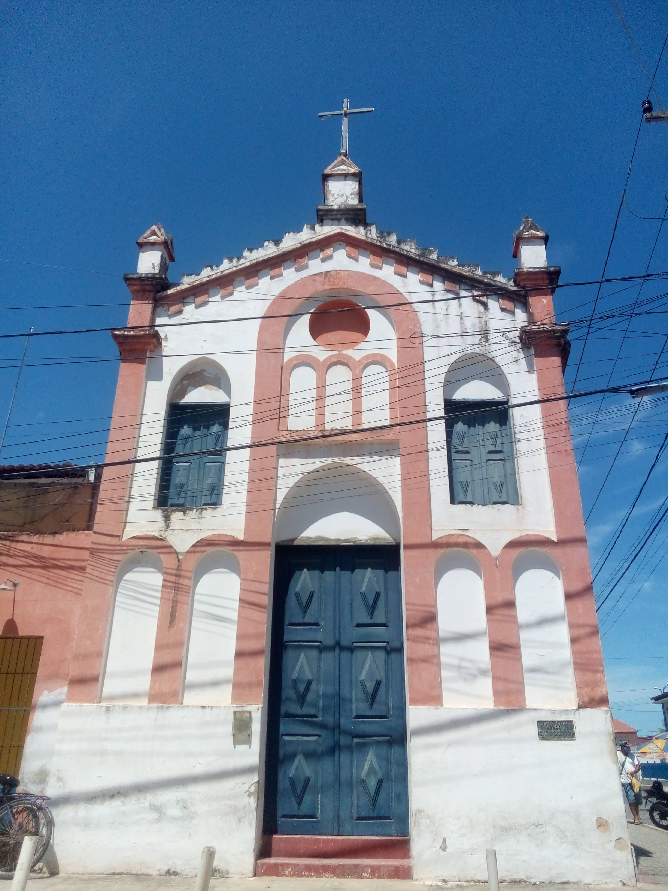

Geoinfos
Informações técnicas sobre relevo, população, IDH etc.
| INFORMAÇÕES | |
|---|---|
| Municípios limítrofes | N: Fortim; L: Icapuí; S: Rio Grande do Norte (Tibau, Mossoró, Baraúna), Jaguaruana, Itaiçaba; O: Palhano, Beberibe |
| Fundação | 11 de abril de 1747 |
| População total | 74 547 hab. |
| Densidade | 60,6 hab./km² |
| Área total | 1 229,194 km² |
| Clima | Tropical atlântico e Tropical |
| Altitude | 5 m |
| IDH | 0,655 — médio |
| PIB | R$ 1 214 577 mil |
| INFORMAÇÕES TERRITORIAIS | |
|---|---|
| Número de habitantes | 74 547 habitantes |
| Superfície de Aracati |
124 730 hectares
1247,30 km² (481,59 sq mi) |
| Densidade populacional | 59,8 ha./km² |
| Altitude de Aracati | 12 metros de altitude |
| Coordenadas geográficas decimais |
Latitude:
-4.56273
Longitude: -37.7691 |
| Coordenadas geográficas sexagesimais | Latitude: 4° 33' 46'' Sul , Longitude: 37° 46' 9'' Oeste |
| INFORMAÇÕES DO MUNICÍPIO | |
|---|---|
| Endereço da Prefeitura Municipal de Aracati |
Aracati
Prefeitura de Aracati
Rua Santos Dumont, 1146 - Farias Brito ARACATI - CE, 62800-000 Brasil Work (88) 3421-2796 Fax (88) 3446-2421 |
| Telefone da prefeitura |
(88) 3421-2796
Internacional: +55 (88) 3421-2796 |
| Fax |
(88) 3446-2421
Internacional: +55 (88) 3446-2421 |
| Endereço electrónicoda prefeitura |
A carregar...
|
| Site oficial do município | Aracati.ce.gov.br |
| INFORMAÇÕES DO ADMINISTRATIVAS | ||
|---|---|---|
| Prefeito de Aracati | BISMARCK COSTA LIMA PINHEIRO MAIA | |
| Partido politico | PTB | |
| INFORMAÇÕES DE TRANSPORTE | |
|---|---|
| Transporte urbano disponível | --- |
| Aeroporto |
Aeroporto Dix-Sept Rosado 84.1 km
Aeroporto Internacional Pinto Martins 121.9 km
Aeroporto de Sobral 301.6 km
|
| INFORMAÇÕES DE DISTÂNCIA A OUTRAS CIDADES | ||
|---|---|---|
| São Paulo : 2318 km | Rio de Janeiro : 2124 km | Brasília : 1672 km |
| Salvador : 939 km | Belo Horizonte : 1826 km | Manaus : 2477 km |
| Curitiba : 2628 km | Recife : 503 km mais perto | Goiânia : 1842 km |
| Belém : 1242 km | Porto Alegre : 3168 km | Guarulhos : 2296 km |
| Campinas : 2274 km | São Luís : 761 km | São Gonçalo : 2182 km |
| Distância calculada em linha reta! | ||
Fonte: Wikipedia e Cidade Brasil
História
Conheça mais sobre a história de Aracati.
Os primeiros habitantes das terras de Aracati, os índios Potyguara,[10] provavelmente entraram em contato com os europeus em 2 de fevereiro de 1500, através do navegador espanhol Vicente Yáñez Pinzón, que aportara no local denominado Ponta Grossa ou Jabarana, segundo o historiador Tomás Pompeu de Sousa Brasil. Pero Coelho de Souza, durante a expedição contra os franceses que haviam invadido o Maranhão, ergueu, a 10 de agosto de 1603, às margens do Rio Jaguaribe, o Fortim de São Lourenço. A sua permanência deu origem ao povoado de São José do Porto dos Barcos, sucessivamente, Cruz das Almas e Santa Cruz do Aracati. Aracati tornou-se um ponto de apoio militar. Várias edificações foram construídas: Bateria do Retiro Grande, Presídio da Ponta Grossa, Presídio de Coroa Quebrada, Presídio do Morro de Massaió e outras. A ocupação definitiva de Aracati teve início com o funcionamento das oficinas ou charqueadas do Ceará, que foram responsáveis por possibilitar a competitividade da pecuária no estado, tendo em vista os privilégios da Zona da Mata pernambucana com a cultura canavieira. Aracati transformou-se então em produtor de carne seca e no principal porto de exportação deste produto para as regiões canavieiras, além de continuar a ser um ponto de apoio militar (Fortim de Aracati), agora com o intuito de proteger o porto, as transações comerciais e os habitantes contra os ataques de índios como os Payacu. A possibilidade de abate e conservação da carne, através do charque, foi a principal responsável pela ocupação e desenvolvimento das terras do Ceará. Por volta de 1740, já existiam oficinas em Aracati, inicialmente no pequeno Arraial de São José dos Barcos do Porto dos Barcos do Jaguaribe, depois elevada à categoria de Vila com o nome de Santa Cruz do Aracati, hoje cidade do Aracati. O comércio de carne e couro atraía abastados senhores de locais diversos. Aracati manteve-se por longo tempo como a localidade de maior influência de formação econômica, social e política do povo cearense. Com o crescimento do povoado, no local, em 1714, foi erguida uma capela e, em 1743, foi instalado um juízo e tabelião local. Já em fins do século XVIII, Aracati se transformara, juntamente com as vilas de São Bernardo das Russas e Icó, na praça de negócios mais desenvolvida do Ceará. Em 10 de fevereiro de 1748, foi elevada à categoria de vila (ato oficial). No mesmo ano, foi erguido um pelourinho e empossada a câmara. Em 1770, foram erguidas a Casa da Câmara e a Cadeia, na Rua do Comércio, antiga Rua das Flores. Em 1779, Aracati contava com cerca de 2 mil pessoas, cinco ruas e muitos sobrados e mais de setenta lojas. Em 1829, foi apresentada, na Assembleia Geral do Ceará, uma proposta que pretendia transferir a sede do Governo da Capitania para a Vila de Aracati, mas a proposta foi rejeitada. Em 25 de outubro de 1842, a vila foi elevada a condição de cidade pela Lei Provincial 244. Em 1824, durante a Confederação do Equador, a vila de Aracati tornou-se palco de um dos acontecimentos marcantes da história do Nordeste Brasileiro: Tristão Gonçalves de Alencar Araripe chefiou tropas rebeldes que atacaram e arruinaram a localidade, permanecendo no local por uma semana. Aracati sofreu com as inundações do Rio Jaguaribe, hoje controladas com a construção de um dique. Eleição Municipal de 1844 As comitivas de eleitores que transitavam pelas ruas e travessas da cidade buscavam suas pousadas nos “currais eleitorais,” verdadeiros acampamentos montados pelos respectivos partidos políticos, aonde iriam se alojar, receber alimentação e orientação, esperando a hora da eleição, que seria realizada no sábado dia 7 de setembro de 1844, na Igreja Matriz, como mandava a legislação eleitoral da época, para eleger os 9 vereadores para Câmara Municipal além do Juiz de Paz[3]. O partido Conservador, apelidado de Caranguejo era liderado pela poderosa família Caminha, cujo chefe o Cel. Silvestre Ferreira dos Santos Caminha, mantinha uma longa predominação na política do Aracati. Nessa eleição municipal, no entanto, sofria as consequências da dissidência de alguns antigos correligionários, que foram denominados de Equilibristas, que se aliando aos Carcarás, cognome do Partido Liberal; preparavam através dessa união, causar uma fragorosa derrota ao seu tradicional rival na política aracatiense, o Partido Conservador, levando à vitória o Partido Liberal, chamado também de Chimango, comandado pelo Cel. João Crisóstomo de Oliveira e membros da família Pamplona, que tinha como maioria dos seus eleitores gente da cidade, enquanto os Caminha contavam com os moradores do sertão. Quando os sinos da Matriz começaram a badalar no começo da manhã do sábado, dia 7 de setembro de 1844, chamando os fiéis para a celebração da missa, era também uma convocação para o comparecimento ao local de votação. Saindo depois da 2ª chamada do sino da Matriz do seu sítio no São José, acompanhado de um séquito de correligionários, todos com as cédulas de votação marcadas com os nomes dos vereadores do partido Caranguejo, Reinaldo da Costa Lima ao chegar ao largo da Matriz encontrou o local tomado por uma multidão. A mesa era composta pelo presidente, geralmente o pároco da cidade, dois secretários e dois escrutinadores, que tinham a competência de reconhecer a identidade dos votantes, receber as cédulas, numerá-las e apurá-las, manter a ordem da votação, requisitar a autoridade competente para fazer observar a lei. À medida que cada votante entregava sua cédula, um dos secretários a numerava, rubricava e recolhia na urna. O voto não era secreto. A lei permitia também o voto dos analfabetos. Terminada a eleição, a própria mesa, a vista de todos, procedia à apuração. Antes do início da votação, o movimento era intenso em todo o largo da matriz, com o ajuntamento dos eleitores de ambas as facções políticas em disputa. A cada momento, um pequeno distúrbio se manifestava no meio da aglomeração. Os chefes políticos, juntamente com o delegado de polícia, sentindo que poderiam perder as rédeas da turba, resolveram então se reunir e tentar entrar num acordo para evitar que um turbilhão de violência e agressões acontecesse espalhando-se por toda a cidade sem nenhum controle das autoridades. Combinaram então que fosse feita a contagem dos votantes ainda antes de votarem. Quem tivesse mais gente sairia vencedor e quem tivesse menos eleitores se desse por vencido e estava assim tudo terminado, sem necessidade de votação. Os Caranguejos, tendo à frente o Cel. Silvestre Ferreira Caminha, reuniram todo seu pessoal em fila. O mesmo aconteceu com os Chimangos que a ordem do Cel. João Crisóstomo de Oliveira se postaram em fila para que pudessem ser contados para finalizar de uma vez por todas aquela pendenga, que se arrastava sem solução ao lado da Praça da Matriz, ao sol que começava a ficar forte, trazendo fadiga e calor para o povaréu.[11] Poderes políticos A partir de 1748, Aracati passou a possuir uma Câmara Municipal. Só poderiam ter Câmaras Municipais as localidades elevadas à condição de vila. Compunham a Câmara Municipal os chamados "homens bons"; ou seja, pessoas do sexo masculino, portugueses ou filhos de portugueses e que tivessem propriedade e influência política. A cidade por longa de sua história, sofreu com enchentes conhecido como cheias durante 1922, 1924, 1974 e 1985, esse último resultando na criação de um dique de proteção. Foi reconstruída ao lado direito e de costas para o Rio Jaguaribe para que os ventos levassem para longe os odores dos locais de abate do gado. Esta conformação urbana permanece até os dias de hoje, resultando em uma falta de integração da cidade com o rio responsável por seu surgimento.
Pontos Turísticos
Saiba mais sobre os melhores lugares e o que fazer em Aracati.
Canoa Quebrada

A povoação de Canoa Quebrada nasceu a partir do pequeno povoado de pescadores, a Vila do Estevão . Descoberta na década de 1960 por cineastas franceses do movimento em "Nouvelle Vague", a povoação sofreu um choque de culturas, que resultou num sentimento de liberdade que ali impera até hoje.[2] Reza a tradição local que, de dia, os franceses trabalhavam duro e, à noite, se entregavam a diversão. Por essa razão, uma lua e uma estrela, esculpidas nas falésias, tornaram-se o símbolo do local. Uma outra versão dessa tradição local narra que, na equipe de filmagem, existia um marroquino, de crença islâmica, que sentindo remorsos pelas continuadas farras noturnas, desejava o perdão de Alá. Para se redimir da culpa, mandou esculpir, nas falésias, a lua e a estrela, hoje ícones locais. A povoação adquiriu fama ao ser descoberta, na década de 1970, pelos "hippies", que ali encontraram um lugar remoto,com grande belezas habitado apenas por uma tribo indígena e alguns pescadores, uma população simples e hospitaleira, que até hoje preservam a tradição de pescar com jangadas no mar. Alguns desses "hippies" fixaram-se no local, casando com os nativos e tendo filhos. Desse modo, é possível encontrar ali muitos descendentes de suíços, franceses e outros europeus. Canoa Quebrada voltou a ser cenário de um filme em 1997, com a produção de Bela Donna, por Bruno Barreto e direção de Fábio Barreto, tendo, a partir de então, se transformado em um dos principais destinos turísticos do Ceará. À noite, moradores e turistas se encontram na rua principal jocosamente apelidada de "Broadway", embalados pelo ritmo do "Reggae" e do Forró. Atualmente a região encontra-se protegida através da Área de Proteção Ambiental de Canoa Quebrada (APACQ),com cerca de setenta mil hectares. A praia foi cenário das primeiras gravações de Malhação 2009, produzida e exibida pela Globo.
Palacete sede da prefeitura municipal de Aracati

Igreja Bom Jesus dos Navegantes.

Igreja Matriz Nossa Senhora do Rosário.

Como Chegar?
Veja como chegar nos melhores pontos de Aracati